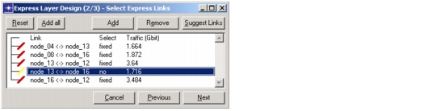

Optical Express Layer > Select Express Links Dialog Box
Select Express Links Dialog Box
The Select Express Links dialog box appears when you click Next in the Select Gateway Nodes Dialog Box. The treeview lists all links in the network and enables you to select or unselect the links that will act as express links.
Figure 11-3 Select Express Links Dialog Box

| Home © 1987-2007 OPNET Technologies, Inc. All Rights Reserved. This software may be covered by one or more U.S. Patents. See complete patent notice in the Legal Notices section. OPNET Support Center |